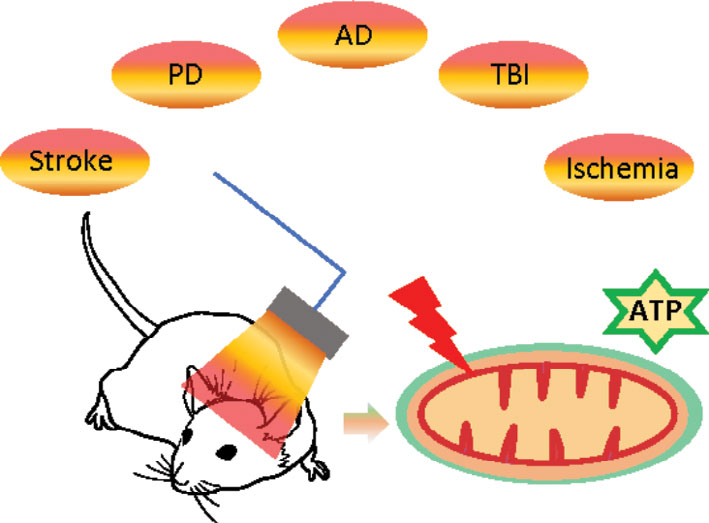

Non-invasive photobiomodulation
Testing repeated light-based neuromodulation to suppress spikes, seizures, HFOs, and cognitive decline in epilepsy and Alzheimer's disease models.
Read more →The Li Lab develops multimodal biomarkers and neuromodulation strategies for epilepsy and related neurological disorders, combining electrophysiology, neuroimaging, network science, and photobiomodulation.

Our work asks how pathological brain networks emerge, how they disrupt cognition, and how prevention-oriented interventions can be tested before chronic disease becomes established.
Testing repeated light-based neuromodulation to suppress spikes, seizures, HFOs, and cognitive decline in epilepsy and Alzheimer's disease models.
Read more →Combining chronic recordings, fMRI/MRI, high-frequency oscillations, and graph analysis to identify early markers of epileptogenesis.
Read more →Studying how spike-ripple events and epileptiform activity disrupt hippocampal-prefrontal communication and memory consolidation.
Read more →Developing statistical, signal-processing, optical imaging, and network-science tools for reproducible multimodal neuroscience.
Read more →The lab integrates experimental and computational platforms that connect cellular-scale signals with brain-wide network dynamics.

Li Lab is based in UNT Biomedical Engineering at Discovery Park, where experimental neuroscience, engineering design, and computational analysis are integrated in a shared research environment.

MEA, local field potentials, penetrating microelectrodes, spike-ripple detection, and chronic neural recordings.

Transcranial photobiomodulation protocols for prevention-oriented studies in epilepsy and neurodegeneration.

Laser speckle imaging, MRI/fMRI-informed analysis, hemodynamic imaging, and multimodal readouts.

Graph theory, automated event detection, biomarker modeling, and electrophysiology-imaging integration.
The Li Lab works with epilepsy, neurotrauma, pediatric neurology, brain organoid, synthetic biology, and shared preclinical imaging collaborators across institutions.
Long-standing collaborations in epilepsy biomarkers, post-traumatic epilepsy, and translational systems neuroscience.
UCLA Laboratory for Epilepsy ResearchNeil Harris LabLocal collaborations in synthetic biology, brain organoids, neurodevelopmental models, and engineering approaches to disease mechanisms.
UNT Biomedical EngineeringClement Chan LabMoo-Yeal Lee Bioprinting LabShared imaging resources support multimodal studies that connect electrophysiology, neuroimaging, and disease progression in preclinical models.
Core Lab: Pre-clinical ImagingClinical collaborations connect lab biomarkers and neuromodulation questions with pediatric epilepsy, EEG, and translational patient-focused expertise.
Joyce Y. WuCharuta JoshiLi Lab research is supported by federal and foundation funding for epilepsy, neuroengineering, and prevention-oriented neuroscience.
Supporting biomedical research into mechanisms, biomarkers, and intervention strategies for neurological disease.
Supporting epilepsy research, training, and translational work toward better diagnosis, treatment, and prevention.